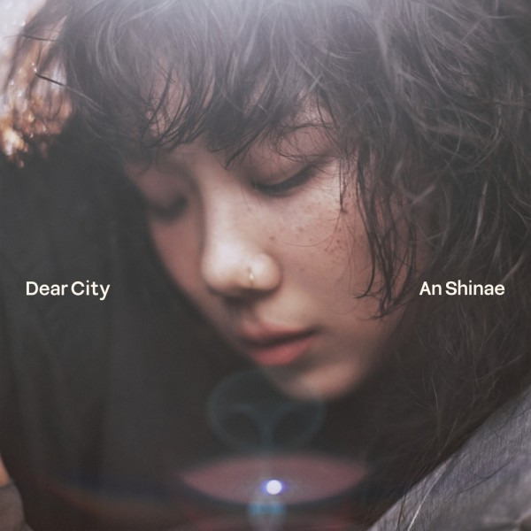

안녕하세요 라보엠입니다.
오늘은 김범수 채널을 보다가 안신애가 출연해서 발견한 안신애의 Hold Me Now 를 소개해드리겠습니다. 가수 안신애는 여성 재즈 그룹 바버렛츠의 리더였으며 바버렛츠의 음악적 색을 만들었던 가수입니다. 저는 크리스마스에는 바버렛츠의 캐롤을 꼭 듣습니다. 이 곡 는 안신애가 솔로 데뷔후 두번째 싱글 Dear City 에 담긴 타이틀곡으로 도시에서의 삶을 이야기하고 있습니다.
안신애 Hold Me Now - MV
안신애 Hold Me Now 가사
아프고 힘들고 까지고 다치고
이게 내 속마음이야
누구도 아무도 없는 곳 홀로
울고 싶은 마음이야
이런 내 손 잡아 줄 수 있겠니
나는 네가 필요해
까만 세상 홀로 넘어질 수 없어
Baby won't you hold me now
Baby won't you hold me now
무너지는 나를 잡아
떨어지지 않게
두 발로 서게
Every time I close my eyes
I feel like I just want to cry
하늘과 땅 그 어디 중간쯤에 내 자리
나 갈 곳 있게 Please
Hold me now
Ah
잘 먹고 잘 자고 잘 입고 잘 쉬고
그게 어려운 일이야
울고 다시 웃고 숨 쉬고 사랑하고
그럴 날이 또 올까
이런 내 마음 알아줄 수 있겠니
나는 네가 필요해
험한 세상 홀로 떨어질 수 없어
Baby won't you hold me now
Baby won't you hold me now
무너지는 나를 잡아
떨어지지 않게
두 발로 서게
Every time I close my eyes
I feel like I just want to cry
하늘과 땅 그 어디 중간쯤에 내 자리
나 갈 곳 있게 Please
Hold me now
Ah
Hold me now

Hold Me Now Release Note
Hold Me Now는 소울풀한 영국풍의 팝 발라드로, 앨범의 첫 번째 주제인 '고통'을 직관적으로 표현한 가사가 인상적이다. 잔잔하게 마음을 어루만지는 연속된 패턴의 피아노 연주 위에 안신애 특유의 절절하면서도 힘있는 목소리가 어우러지고, 퀄텟 구성의 스트링이 더해져 고통을 포근하게 감싸주는 듯한 사운드를 들려준다. 안신애는 '벼랑 끝에서 음악으로 살아남았다'고 표현하며, 자신의 인생 속에서 음악을 통해 받은 커다란 위로를 이 노래를 통해 전달하고자 한다. 그녀는 이 노래가 각박한 삶 속에서도 최선을 다해 살아가는 도시의 사람들에게 작은 공감과 위로가 되기를 소망한다.
Lyrics & Composed by 안신애
Arranged by Philtre
Piano Performed by Philtre
Strings Performed by 융스트링
Strings Arranged by Philtre
Recorded by 이기호 @P NATION / 정기홍, 주예찬 @Seoul Studio
Digital Editing by Philtre @philtrepoem / 이기호 @P NATION / 안신애
Mixed by 고현정 @koko sound studio
Mastered by Randy Merrill @STERLING SOUND